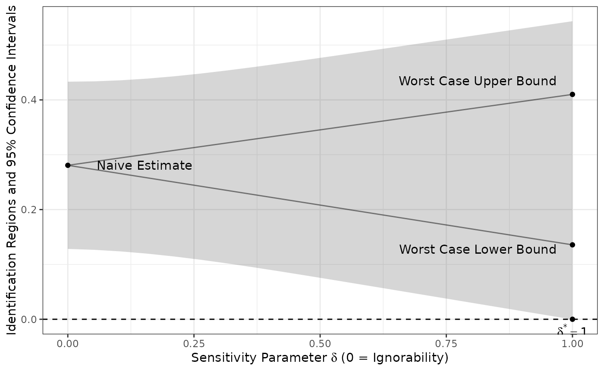

This function performs a line search over values of delta, the sensitivity parameter, in order to find (if it exists) delta*, the value of delta where the confidence interval no longer includes zero.
Usage
sensitivity_ds(
Y,
Z,
R1,
Attempt,
R2,
minY,
maxY,
sims = 100,
strata = NULL,
alpha = 0.05,
data
)Arguments
- Y
The (unquoted) outcome variable, or a formula
outcome ~ treatment. Must be numeric.- Z
The (unquoted) assignment indicator variable. Must be numeric and take values 0 or 1. Ignored when
Yis a formula.- R1
The initial sample response indicator: unquoted column name, or a quoted string column name when using the formula interface. Must be numeric and take values 0 or 1.
- Attempt
The follow-up attempt indicator: unquoted column name, or quoted string. Must be numeric and take values 0 or 1.
- R2
The follow-up response indicator: unquoted column name, or quoted string. Must be numeric and take values 0 or 1.
- minY
The minimum possible value of the outcome (Y) variable.
- maxY
The maximum possible value of the outcome (Y) variable.
- sims
Number of values of delta at which to evaluate the bounds. Defaults to 100.
- strata
Stratification variable: unquoted column name or a quoted string column name.
- alpha
The desired significance level. 0.05 by default.
- data
A dataframe. Must be given by name:
datais the last argument, so passing it positionally assigns it to another argument.
Value
A list with three elements: sensitivity_plot, a ggplot object;
sims_df, a data frame of bounds and confidence intervals at each delta;
and p_star, a one-row data frame giving delta* when it exists and an
explanatory character string when it does not.
Examples
set.seed(343)
N <- 1000
Y_0 <- sample(1:5, N, replace = TRUE, prob = c(0.1, 0.3, 0.3, 0.2, 0.1))
Y_1 <- sample(1:5, N, replace = TRUE, prob = c(0.1, 0.1, 0.4, 0.3, 0.1))
Z <- rbinom(N, 1, 0.5)
Y_star <- Z * Y_1 + (1 - Z) * Y_0
R1 <- rbinom(N, 1, prob = 0.7 + 0.1 * Z)
Y <- Y_star
Y[R1 == 0] <- NA
# Follow up intensively with a random half of the initial non-responders
Attempt <- rep(0, N)
Attempt[R1 == 0] <- rbinom(sum(R1 == 0), 1, 0.5)
R2 <- rep(0, N)
R2[Attempt == 1] <- rbinom(sum(Attempt == 1), 1, 0.9)
Y[Attempt == 1 & R2 == 1] <- Y_star[Attempt == 1 & R2 == 1]
df <- data.frame(Y, Z, R1, Attempt, R2)
sens <- sensitivity_ds(Y, Z, R1, Attempt, R2, minY = 1, maxY = 5,
sims = 20, data = df)
sens$sensitivity_plot

sens$p_star
#> p value label hjust vjust
#> 1 1 0 delta^'*' == 1 1.1 1.3